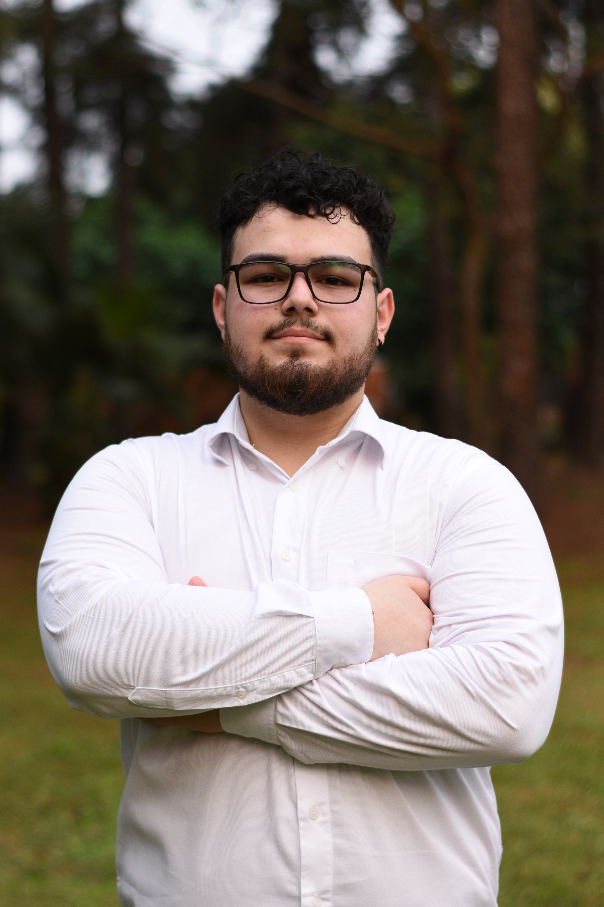
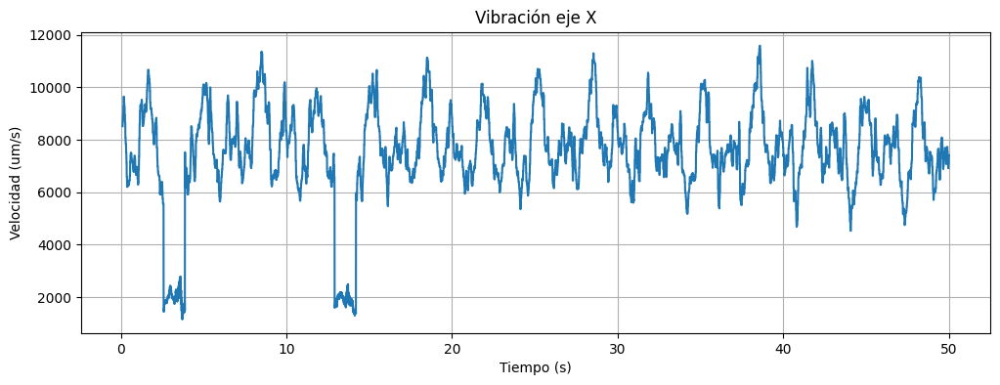
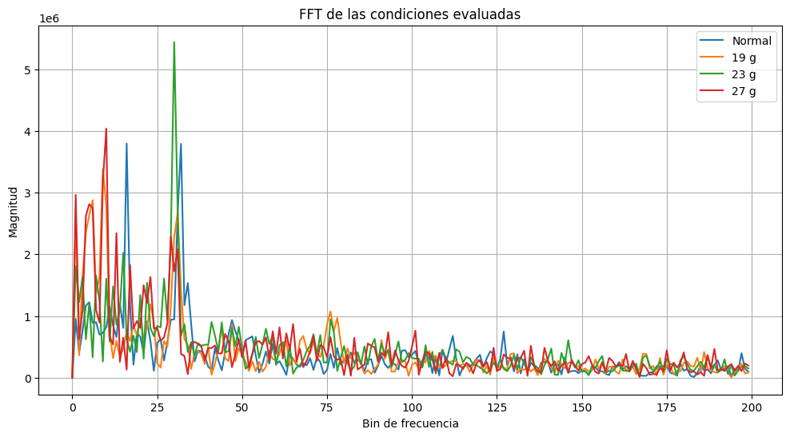
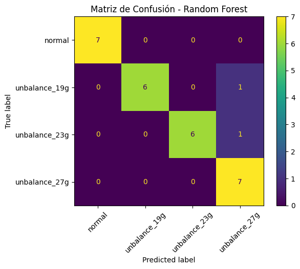
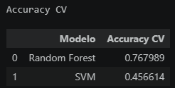

Ingenieria Electromecánica
Facultad de Ingeniería - Universidad Nacional de Asunción (FIUNA) | En curso
Portafolio profesional
Estudiantes de Ingeniería Electromecánica - FIUNA
Somos estudiantes de Ingeniería Electromecánica interesados en la aplicación de inteligencia artificial, análisis de datos y aprendizaje automático para la resolución de problemas de ingeniería. Nuestro trabajo se enfoca en el procesamiento de señales, análisis de vibraciones y desarrollo de modelos predictivos utilizando Python.

Facultad de Ingeniería - Universidad Nacional de Asunción (FIUNA) | En curso
Este proyecto tiene como objetivo clasificar automáticamente distintas condiciones de desbalance en un sistema rotativo mediante el análisis de señales de vibración. Para ello se adquirieron datos experimentales utilizando acelerómetros, se extrajeron características estadísticas y espectrales de las señales, y posteriormente se entrenaron modelos de Machine Learning para identificar el estado del sistema.
Algunas de las gráficas utilizadas para el análisis y evaluación de los modelos.



